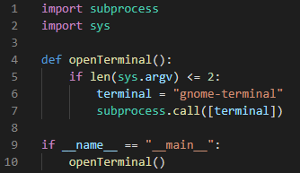
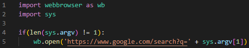
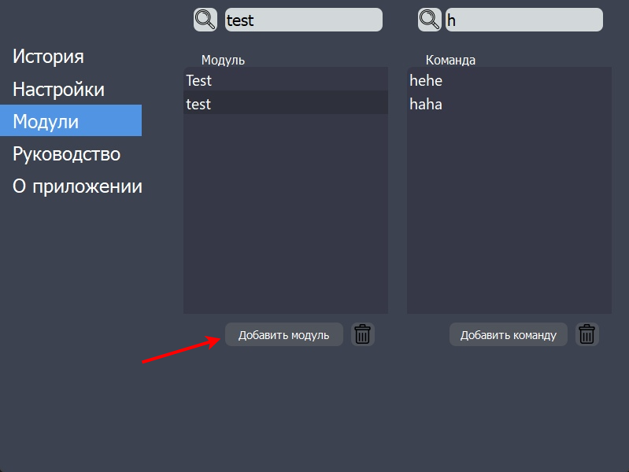
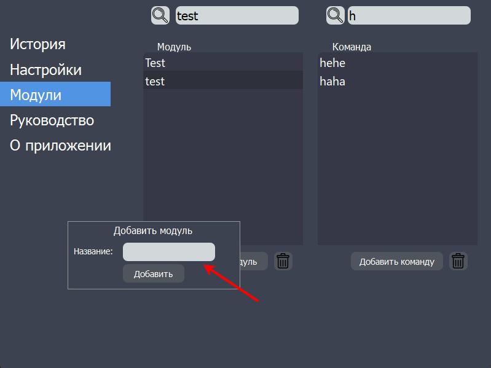
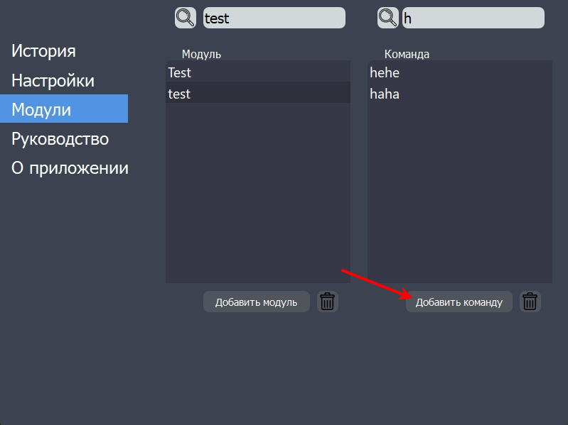
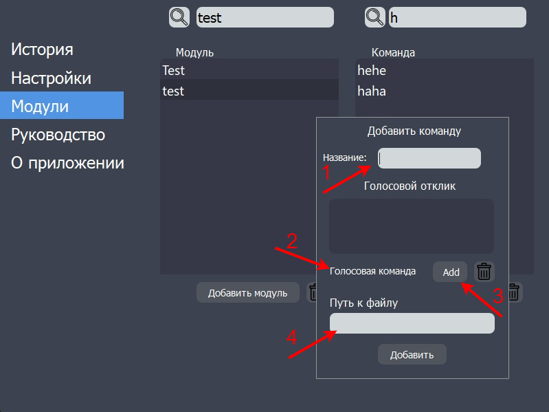
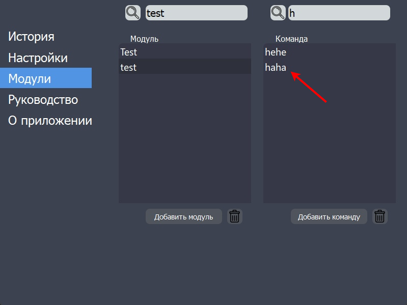

1. Написать скрипт выполнения команды:
а) Подключить соответствующие библиотеки
(в зависимости от команд, необходимые библиотеки могут отличаться): import libraryname
[по желанию можно сократить название библиотеки для дальнейшего удобного обращения к ней:
as newlibraryname]
В примерах ниже представлены некоторые из возможных библиотек:
-] subprocess — компонент стандартной библиотеки Python, позволяющий запускать внешние программы и просматривать их вывод
-] sys - стандартная библиотека Python, позволяющая получать информацию об интерпретаторе Python и ОС, работать с вводом и выводом, менять параметры модуля
-] webbrowser — вшитый в Python модуль, позволяющий просматривать веб-документы
б) Выполнить проверку длины аргумента(произносимой команды): if len(sys.argv)
в) Написать необходимую команду:
subprocess.call([terminal]) - открытие терминала;
wb.open(...) - поиск чего-то в интернете.
г*) Если написанный скрипт планируется импортировать и использовать в другом коде,
то можно добавить проверку: if __name__ == "__main__", которая позволяет использовать только часть скрипта
в случае, когда команда используется напрямую
Пример скриптов:


Рис 1.1. Открыть терминал
Рис 1.2. Найти что-то в интернете
2. Разместить подготовленный скрипт в каталоге Modules в директории приложения.(Рекомендуется)
3. Запустить приложение и зайти во вкладку "Модули".
4. Выбрать из списка уже имеющийся модуль, с помощью нажатия по нему "ЛКМ", или добавить новый,
используя функцию "Добавить модуль".

Рис 2.1. Добавить модуль
5. После указания желаемого названия модуля и нажатия кнопки "Добавить", созданный модуль
отобразится в списке доступных и его можно будет выбрать.

Рис 2.2. Добавить модуль
Рис 2.3. Добавить модуль
6. Выбрав доступный модуль, в списке команд отобразятся все хранящиеся в данном модуле команды,
а также возможность добавить новые с помощью функции "Добавить команду".

Рис 3.1. Добавить команду
7. Заполнив все необходимые поля:
(1) Текстовое название команды
(2) Голосовые варианты вызова команды, добавив их в список с помощью (3)
(4) Путь к файлу скрипта команды
И нажав кнопку "Добавить", команда будет создана и отобразится в списке доступных.

Рис 3.2. Добавить команду

Рис 3.3. Добавить команду
8. Поздравляем! Команда успешно добавлена и готова к использованию.
(Рекомендуется перезапустить приложение)